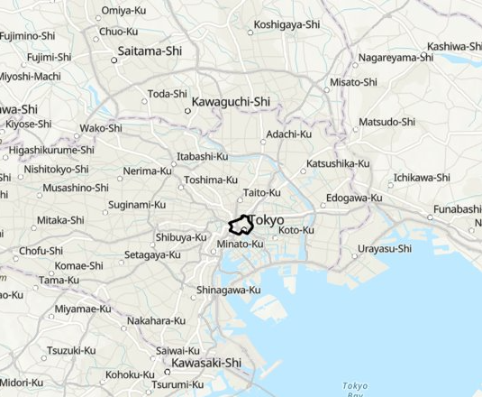
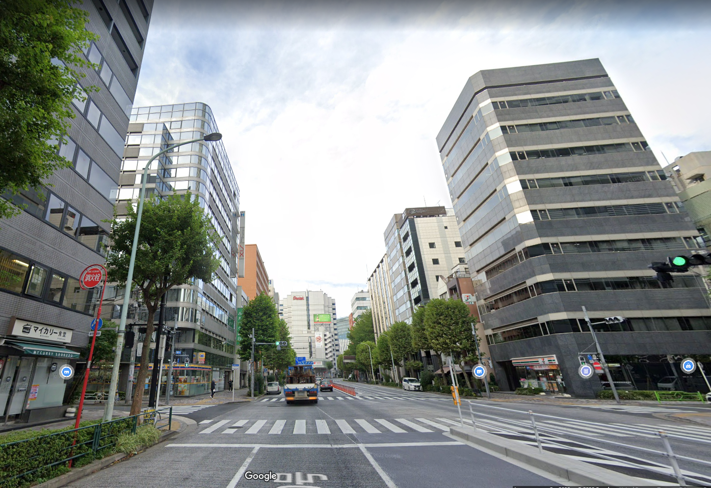
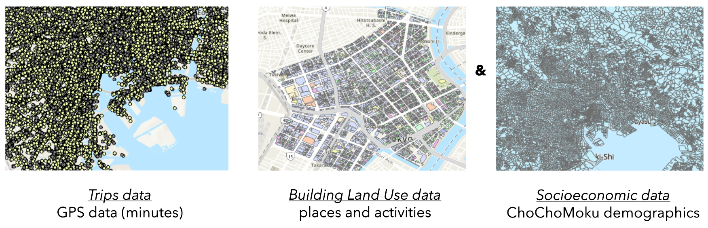
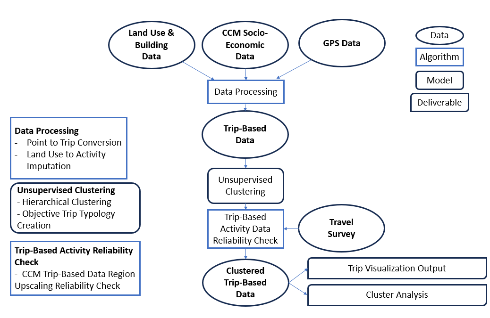
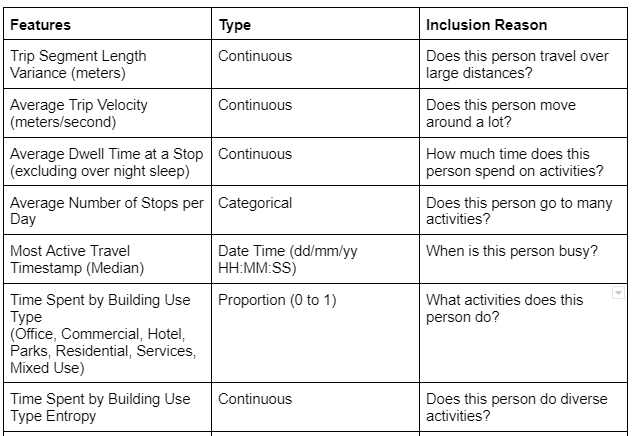
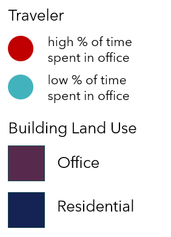
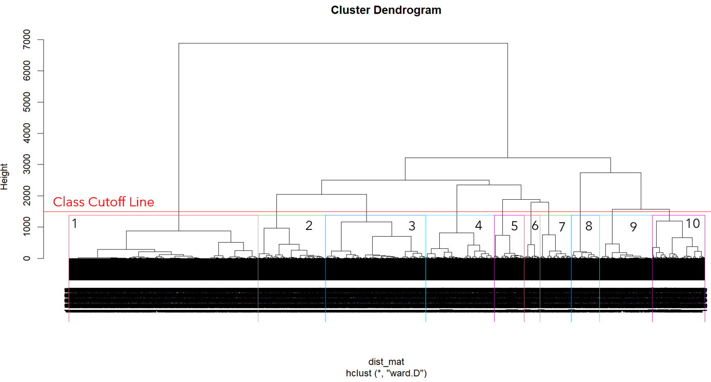
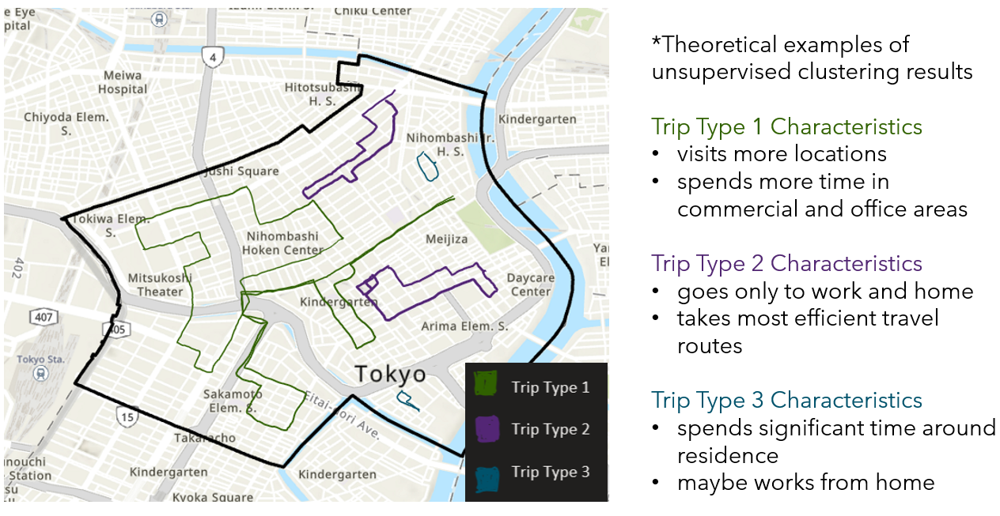

Welcome to my page! I've spent some time documenting my work, my interests, and random things about myself here. I hope you find what your looking for. Please do look around!
Unsupervised Learning on Trip Typologies in Nihonbashi Tokyo Smart City Effort
TLDR: Cleaned and organized GPS data into trips, utilized hiearchical clustering on the trips, generated objective categories of trips in the neighborhood for Mitsui Fudo-san's future property development of the neighborhood and University of Tokyo city planning in the region

Nihonbashi Neighborhood(outlined above) lies at the heart of the Tokyo region and is home to high/medium density commercial and medium density residential properties
Topics
Unsupervised, Machine Learning, Hierarchical Clustering, Smart Cities, GPS Data, High Frequency, Geospatial Analysis, R, Python, Geopandas, sf Package, kepler.gl, Research, Tokyo
Project Motivation
The project was born from a desire to investigate non-traditional structures in how cities operate, in this case the flow of people. Traditionally, top-down categories were defined in travel surveys for types of commutes such as stay-at-home spouse, student, or long distance commuter. These are categories from historical observations and opinions, but what if there was a way to think about people flows from an objective point of view. With access to high-resolution data, this is now possible and was explored throughout this project. The setting for this project application was the Nihonbashi district in Tokyo as Mitsui Fudo-san and University of Tokyo supplied the data through a partnership with Georgia Tech for this Smart City Research

A typical street in the neighborhood looks like this(Copyright 2023 Google)
Project Walkthrough
This project was born through a capstone course Smart City research partnership between Georgia Tech and the University of Tokyo Kashiwanoha Campus CSIS Department in conjunction with Mitsui Fudosan(One of Japan's "Big 3" real estate developers along with Misubishi and Sumitomo).
The data sources we had to work with included GPS data from cell devices, the government's property parcel map, a Japanese Travel Survey for the Tokyo Area, and Japanese Census ChoChoMoku Data(CCM).
Datasets used for Project

The methodology followed is shown below and follow three main steps of cleaning the data, applying the Unsupervised learning algorithm, and visualizing and interpreting the results

Cleaning the data included using R sf package and python geopandas to connect individual data points into trips, combining data from different sources, and geospatial processing to summarize useful geospatial features for each trip. We ended up generating many features to cluster upon, but a few are shown here.

Some prelimary results after cleaning included using kepler.gl to visualize our cleaned data. Here, you can already see some interesting things like activity patterns of an individual and what types of activities people do in various parts of the district.
Here's a legend

Here are a couple of trips for detailed schedule observation
Unsupervised Learning was chosen for exploring the objective structure of the human flow data. Below is a dendrogram using Ward's Linkage to Hiearchically Cluster on 10 classes. Each Class is labeled and boxed in a color in the dendrogram below.

This research is still in progress at this time of writing, so the results aren't avaliable quite yet, but here are some hopes. Ideally the outputted clusters would result in something observable like the below that could essentially provide market segmentation for future development and planning

I wanted to thank you... for your leadership and dedication to this project... You really shaped this project and implemented a vision for it... I really trusted your work. You elevated this project beyond what would have been possible had we not had you on board.
— City of Atlanta Department of City Planning Supervisor

You did a great job... from coming up to speed quickly on how to best work with our team to completing all tasks efficiently and with a high quality of work. For every task given, especially larger ones, you were good at taking ownership of the project with minimal direction needed.
— East West Manufacturing Supervisor

I am very pleased with your performance, team spirit, self-starter mentality, and leadership. I am very pleased... with your ability to move a project from concept to reality... you have helped get us... strong infrastructure, technical capability, programming
— Center for Sustainable Communities Supervisor